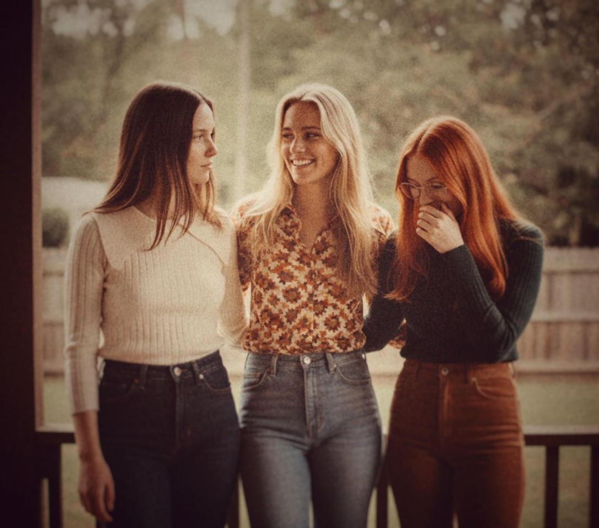

Our Story
Scuola Cosmica Italiana • Trieste


Elena
Moog & ARP Circuitry
A mathematical prodigy from the University of Trieste who found God in the oscillations of a Moog Modular. Elena is the architectural mind of the group, translating the movements of stars into complex voltage patterns.

Giulia
Pulse & Low Frequency
Daughter of a clockmaker, Giulia treats time as a series of interlocking gears. Her bass patterns are the heartbeat of DreamSequence—steady, driving, and heavy enough to crack the Adriatic fog.

Sofia
Vocals & Echo Manipulation
Sofia's voice doesn't travel through air; it travels through space. Using experimental tape delay units, she creates ethereial layers that feel like memories of a future we haven't reached yet.

Trieste, 1972
Born in a small recording studio overlooking the port, DreamSequence was a reaction to the industrial grind of the 70s. While the world looked down at the streets, they looked up at the cosmos, armed only with vacuum tubes and magnetic tape.